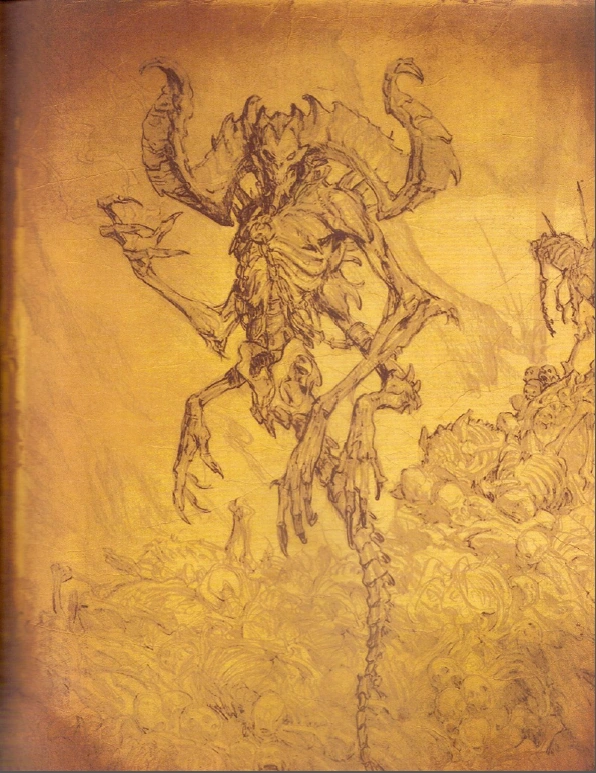
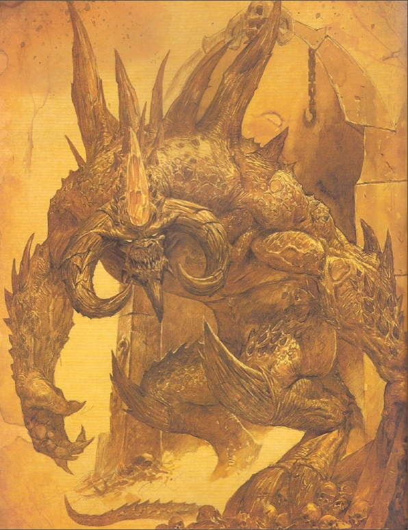
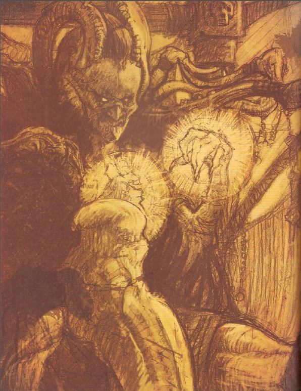

Mephisto
Ursprung: Aus dem ersten Kopf Tathamets
Der älteste und wohl subtilste Bruder. Mephisto muss seine Opfer nicht beherrschen: Er lässt Misstrauen, Fanatismus und Rachsucht in ihnen wachsen, bis sie seine Arbeit selbst verrichten. Ganze Städte haben sich gegenseitig ausgelöscht, ohne dass Mephisto auch nur einen Schritt aus der Hölle getan hatte.
„Hass ist die reinste Kraft, die je erschaffen wurde.”
In Diablo III nutzte er Adria als Werkzeug und lenkte Leahs Schicksal aus dem Hintergrund. Zu Beginn von Diablo IV tritt er als Wolf auf und bietet dem Wanderer seine Hilfe gegen Lilith an — ein Angebot, das nichts von seiner wahren Absicht verrät.

Diablo
Ursprung: Aus dem zweiten Kopf Tathamets
Diablo verkörpert nicht bloß Angst, sondern die Kenntnis der persönlichsten Furcht eines Wesens. Er wurde unter Tristram gebannt, verdarb Prinz Albrecht und später den Helden Aidan. Als Prime Evil vereinte er alle sieben Aspekte Tathamets und stürmte die Hohen Himmel.
„Schrecken ist keine Emotion — er ist die Wahrheit.”
Sein Name ist untrennbar mit Sanktuario verbunden. Jeder Sieg über ihn erscheint endgültig — und erweist sich doch als Aufschub. Seine Fähigkeit, Gefäße zu finden und zu korrumpieren, macht ihn zur beständigsten Bedrohung der Sterblichen.

Baal
Ursprung: Aus dem dritten Kopf Tathamets
Baal strebt weniger nach Herrschaft als nach dem Zerbrechen jeder Ordnung. Nachdem sein beschädigter Seelenstein in den Körper des Horadrim Tal Rasha gebannt worden war, entkam er und zog zum Berg Arreat — wo er den Weltenstein selbst korrumpierte, was Tyrael zwang, das Artefakt zu zerschlagen.
„Jede Ordnung trägt den Keim ihrer Vernichtung in sich.”
Von allen Großen Übeln ist Baal derjenige, dessen Methode der reinen Gewalt und Zerstörung am direktesten ist. Er plant nicht auf Generationen — er zerstört im Moment, mit voller Kraft. Das macht ihn weniger manipulativ als seine Brüder, aber nicht weniger gefährlich.

Andariel
Ursprung: Aus dem vierten Kopf Tathamets
Andariel herrscht über seelische Pein, Verzweiflung und die Erwartung kommenden Leidens. Sie beteiligte sich am Aufstand, der die drei Brüder aus der Hölle verbannte, diente Diablo später jedoch erneut. In Diablo IV taucht sie als beschwörbarer Endgame-Boss auf.
„Schmerz ist nur der Anfang. Qual beginnt, wenn die Hoffnung erlischt.”
Ihr seelisches Gift ist subtiler als das körperliche ihres Bruders Duriel. Sie erschafft keine Wunden — sie erschafft Erwartung. Das Wissen, dass Schlimmeres kommt, bricht Geist und Willen, bevor die erste Klinge fällt.

Duriel
Ursprung: Aus dem fünften Kopf Tathamets
Andariels Zwillingsbruder steht für körperlichen Schmerz. Während andere Übel planen und verführen, wirkt Duriel fast erschreckend direkt: Er will Fleisch brechen und Hoffnung durch körperliche Qual auslöschen. Sein Käfig aus Gedärm unter dem Grab des Horadrim Tal Rasha machte ihn zum brutalsten Hüter.
„Worte sind überbewertet. Schmerz braucht keine Sprache.”
In Diablo IV erscheint er als beschwörbarer Endgame-Boss. Als Zwilling Andariels bilden beide eine Einheit aus körperlichem und seelischem Leiden — Qual von innen und außen, untrennbar verbunden.

Belial
Ursprung: Aus dem sechsten Kopf Tathamets
Belial macht Wahrheit unbrauchbar. Er erschafft falsche Gewissheiten, Masken und politische Intrigen, bis niemand mehr erkennt, wem zu trauen ist. Nach der Verbannung der drei Brüder gewann er im Höllenbürgerkrieg zunächst die Oberhand — bis Azmodan ihn überlistete.
„Die gefährlichste Lüge ist jene, die der andere selbst zu denken glaubt.”
In Diablo III verbarg er sich als Kaiser Hakan II. und herrschte über Caldeum. Seine Fähigkeit, Identitäten zu übernehmen und ganze Reiche von innen zu lenken, macht ihn zu einem Feind, den man nie dort vermutet, wo er tatsächlich wirkt.

Azmodan
Ursprung: Aus dem siebten Kopf Tathamets
Azmodan ist Feldherr, Verführer und Personifikation zügelloser Begierde. Er gewann den Bürgerkrieg der Hölle gegen Belial und führte seine Heere gegen den Berg Arreat. Sein Hochmut ist zugleich seine Stärke und seine größte Schwäche.
„Die Sünde ist kein Fehler. Sie ist das wahre Gesicht der Schöpfung.”
In Diablo III führte er die dämonischen Armeen gegen den Berg Arreat. Als einziger der Geringen Übel hat er je eine Hegemonie über die Hölle ausgeübt — er ist weniger Schatten als seine Geschwister, dafür umso bedrohlicher auf dem Schlachtfeld.